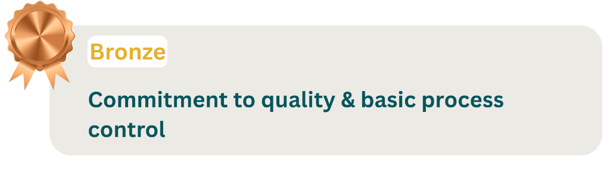
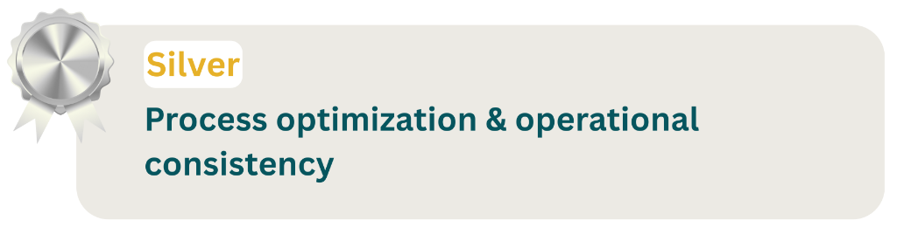
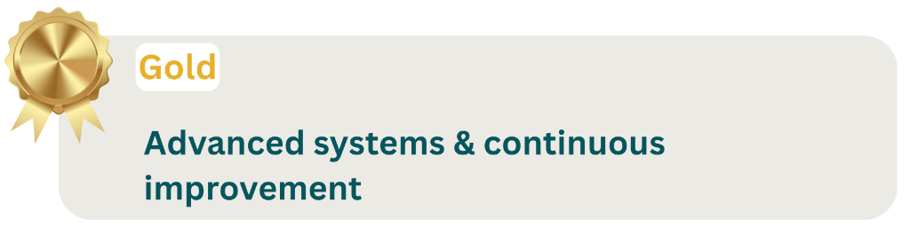

Brief History
Addressing the nation on India's 68th Independence Day, Hon'ble Prime
Minister Shri Narendra Modi
urged the industry, especially the Micro, Small and Medium Enterprises (MSMEs) of India, to
manufacture goods in the country with "zero defects" and to ensure that the goods have "zero
effect" on the environment.
"We should manufacture goods in such a way that they
carry zero defect and that our
exported goods are never returned to us. We should manufacture goods with zero effect that they
should not have a negative impact on the environment".
With an aim to make India a global manufacturing hub, the Prime
Minister gave an open invitation
to manufacturers and investors across the world to establish manufacturing units in India.
"I want to appeal to the entire people world over,
"Come, make in India", "Come,
manufacture in India". Sell in any country of the world but manufacture here. We have got skill,
talent, discipline, and determination to do something," he said. He further said "We want to
give the world a favourable opportunity that come here, "Come, Make in India" and we will say to
the world, from electrical to electronics, "Come, Make in India", from automobiles to agro value
addition "Come, Make in India", paper or plastic, "Come, Make in India", satellite or submarine
"Come, Make in India". Our country is powerful. Come, I am giving you an invitation," he
said."As I say to the world "Come, Make in India", I say to the youth of the country – it should
be our dream that this message reaches every corner of the world, "Made in India". This should
be our dream," added the PM.
Ensuring competitiveness of India's MSME is critical as it will
contribute to the overall growth
of the manufacturing sector and the country's economy. International companies competing in
global markets focus on their competitive strengths of costs acceptable to the market,
technology, innovation, service delivery, lean manufacturing, and defect free products for Zero
Defect and Zero Effect (ZED). It is hence prudent that we must quickly set the pace for the
template of industrialisation and export fuelled growth to make a mark in global markets and
improve our GDP.
Rationale
The announcement of Make in India and Zero Defect Zero
Effect put in perspective the governments’
intent to change the course of economy by focusing on manufacturing as an engine to sustained
growth. In order to build the ecosystem to implement the idea, three important components
emerged as the vehicle for this new transformation:
- The Ease of Doing Business in India.
- The confidence in quality of source material,
components and services.
- Making available competent human resource to drive
the change.
While the DPIIT took the responsibility of creating an
atmosphere of Ease of doing business, M/o
MSME along with QCI, started exploring the idea of creating a holistic scheme to engage the MSME
sector, long considered as a propellant for sustained growth, by improving their quality and
competitiveness.
ZED was thus born! The ecosystem around ZED model is
calibrated to make aware, assess & certify,
counsel, handhold MSMEs and ensure that they rise up the ZED ladder, thus enhancing their
competitiveness in the global marketplace and making them truly "atmanirbhar". It also, as a
consequence, provides career opportunities for the youth in India.
Introduction
As the MSMEs are amongst the strongest drivers of economic development,
innovation and
employment, it becomes imperative to strengthen their ecosystem. The Government of India
envisioned the Zero Defect Zero Effect (ZED) initiative to enhance MSME competitiveness, make
them sustainable and transform them as National and International Champions.
MSME Sustainable (ZED) Certification is an extensive drive to create
awareness amongst MSMEs
about Zero Defect Zero Effect (ZED) practices and motivate & incentivise them for ZED
Certification while also encouraging them to become MSME Champions. Through the journey of ZED
Certification, MSMEs can reduce wastage substantially, increase productivity, enhance
environmental consciousness, save energy, optimally use natural resources, expand their markets,
etc. MSMEs will also be motivated to adopt best practices in work culture, standardisation of
products, processes, systems etc. in order to enhance their global competitiveness and
sustainability. The ZED Certification aims at enhancing the competitiveness of an MSME through
assessment, handholding, managerial and technological intervention etc., hence it is not just a
Certification.
This Scheme is proposed to be implemented in 2 Phases:
- Phase 1:
For Manufacturing MSMEs with UDYAM
Registration. This phase will focus largely on maximizing inclusion of manufacturing
MSMEs
and taking them through the journey of ZED.
- Phase 2: Inclusion of Service Sector MSMEs. This phase will
also strive to
integrate those MSMEs (manufacturing and Service Sectors) who are registered under a
State
Government protocol/system but not on UDYAM. From this phase onwards, additional
information
regarding MSME operations/performance may be collected so as to create a National MSME
Competitiveness Index.
In phase 2, it is also envisaged to provide funding to the ZED
Certified MSMEs to obtain
international certifications, as necessary for international market and further, making
provisions to align ZED Certification with the international certifications for its global
acceptance.
Objective
The ZED Certification envisages promotion of Zero Defect Zero
Effect (ZED) practices amongst
MSMEs so
as to:
- Encourage and enable MSMEs for manufacturing of quality
products using latest technology,
tools
& to constantly upgrade their processes for achievement of high quality and high
productivity
with the least effect on the environment.
- Develop an Ecosystem for ZED Manufacturing in MSMEs, for
enhancing competitiveness and
enabling
exports.
- Promote adoption of ZED practices and recognising the efforts
of successful MSMEs.
- Encourage MSMEs to achieve higher ZED Certification levels
through graded incentives.
- Increase public awareness on demanding Zero Defect and Zero
Effect products through the MSME
Sustainable (ZED) Certification.
- Identify areas to improve upon, thereby assisting the
Government in policy decisions and
investment prioritization.
ZED Certification Levels
MSME Sustainable (ZED) Certification can be attained in THREE Levels
after registering and taking
the ZED Pledge:



ZED Pledge
- Certification Level 1: BRONZE
- Certification Level 2: SILVER
- Certification Level 3: GOLD
Every MSME that embarks on the journey of ZED will have to
take a “ZED Pledge” before
applying for a ZED Certification Level (Bronze, Silver, Gold).
Certification on WASH Standard & other capacity building
measures through MSME KAWACH will be
available to MSMEs immediately after taking ZED Pledge.
After taking the ZED Pledge, the MSME can apply for any
Certification Level if it feels that
it can fulfil the requirements mentioned in each level. The intent of taking a ZED Pledge is
to take a “pre-commitment” or a solemn promise by MSMEs to uphold the values of Zero Defect
Zero Effect in their practices and to urge them to move ahead on the journey of ZED.
Eligibility
All MSMEs registered with the UDYAM registration portal (of the
MoMSME) will be eligible to
participate in MSME Sustainable (ZED) Certification and avail related benefits/incentives.
Subsidy on Cost of Certification
Any number of Units registered under one Udyam Registration can apply
for subsidy under this
Scheme. Each Unit (under one Udyam Registration) will need to apply for Certification separately
to avail subsidy/benefits/incentives.
- MSMEs will be given financial assistance/subsidy for obtaining
for a ZED Certification
Level.
- An MSME unit will get subsidy as per the following
structure, on the cost of certification:
- Micro Enterprises: 80%
- Small Enterprises: 60%
- Medium Enterprises: 50%
Additional Subsidy:
- There will be an additional
subsidy of 10% for the MSMEs owned
by Women/SC/ST Entrepreneurs OR MSMEs in NER/Himalayan/LWE/Island territories/aspirational
districts.
- In addition to above, there will be an additional subsidy
of 5% for MSMEs which are also a
part of the SFURTI OR Micro & Small Enterprises - Cluster Development Programme (MSE-CDP) of
the Ministry.
MSMEs may opt for upgrading their Certification Level at any point of
time before the expiry of
validity of their existing ZED Certification. Cost and subsidy will remain the same for the
applied Level.
- A limited-purpose joining reward of Rs. 10,000/- will be
offered to each MSME once they take
the ZED Pledge which needs to be utilized within a defined time period for the purpose
defined as per the following modalities:
- This joining reward may
be used by an applicant MSME
only once while applying for a ZED Certification (Bronze, Silver, Gold).
- If the joining reward
is used for any Certification,
then the cost of the reward will be first deducted from the cost of Certification
and then the Subsidy may apply if applicable. For example, if an MSME uses the
reward for applying for Bronze Certification, the effective cost to MSME becomes
zero, while in case an MSME applies for the Silver or Gold Certification, the reward
amount will be adjusted in the Certification Cost and the subsidy will apply on the
balance amount as per the type of the MSME (Micro, Small or Medium).
- This joining reward will be valid only for 1 year
after taking the ZED Pledge.
Certification Process
ZED Certification can be attained on 3 levels after taking the ZED
Pledge:
ZED Pledge
-
Certification Level
1: BRONZE
-
Certification Level
2: SILVER
-
Certification Level
3: GOLD
- After taking the ZED Pledge, an
MSME can apply online for any
Certification Level (Bronze, Silver, Gold) and would need to conform to all the requirements
of the level applied for, in order to obtain the Certification.
- Every MSME embarking on the
journey of ZED must submit an
Undertaking.
- In case of a non-conformity, the
applicant MSME would be given
an opportunity to close the non-conformity(ies), in a defined time period, in order to be
eligible for the desired level/Certification.
- The Final ZED Certificate will be issued based upon the
findings and recommendation of the
Accredited Assessment Agencies.
Ministry of MSME reserves the right to
visit & inspect any MSME
after Certification, which has availed any subsidy, benefit or incentives under this Scheme.
The process flow and requirement for each level is highlighted in
subsequent pages.
Gap Analysis & Handholding
MSMEs with minimum Bronze certification are eligible to apply for
handholding support. A
provision of up to Rs. 5 Lakhs (per MSME) has been made available for handholding and
consultancy support for MSMEs under ZED Certification for assisting them to move towards Zero
Defect Zero Effect solutions. Out of this, an amount upto Rs. 2 Lakhs to be utilized for
handholding support (as needed) through consulting organizations and up to Rs. 3 Lakhs may be
utilized towards technology upgradation for moving towards zero effect solutions/pollution
control measures/cleaner technology. The utilization of the Financial Support of upto Rs.
3,00,000/- for moving towards zero effect solutions will be subject to Consultant’s
recommendations, verification by respective MSME-DI and approval by the PMAC.
The Ministry will subsidize the handholding
support and technology
upgradation financial support for moving towards zero effect solutions, as follows:
- Micro Enterprises: 80%
- Small Enterprises: 60%
- Medium Enterprises: 50%
Additional Subsidy:
- There will be an additional
subsidy of 10% for the MSMEs owned
by Women/SC/ST Entrepreneurs OR MSMEs in NER/Himalayan/LWE/Island territories/aspirational
districts.
- In addition to above, there will be an additional subsidy of 5%
for MSMEs which are also a
part of the SFURTI OR Micro & Small Enterprises - Cluster Development Programme (MSE-CDP) of
the Ministry.
Surveillance
A surveillance assessment (after a period of 18 months of achieving ZED
Certification) will be
conducted by QCI’s Accredited Assessment Agencies as a part of the ZED Certification. The
surveillance assessment will only be applicable to those MSMEs which have achieved Silver & Gold
Certification levels.
The surveillance assessment will be conducted
as a remote assessment
for both Silver & Gold levels and the cost of the assessment will be as under:
- ZED Silver Level: Rs. 10,000/-
- ZED Gold Level: Rs. 20,000/-
The MSMEs will be given financial assistance/subsidy for the
surveillance assessment as per the
following structure:
- Micro Enterprises: 80%
- Small Enterprises: 60%
- Medium Enterprises: 50%
Renewal after expiry of ZED Certificate
After the expiry of the validity of the ZED Certificate, MSMEs can go
for Renewal of their ZED
Certification level in order to continue availing associated benefits/incentives.